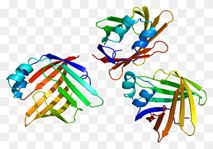
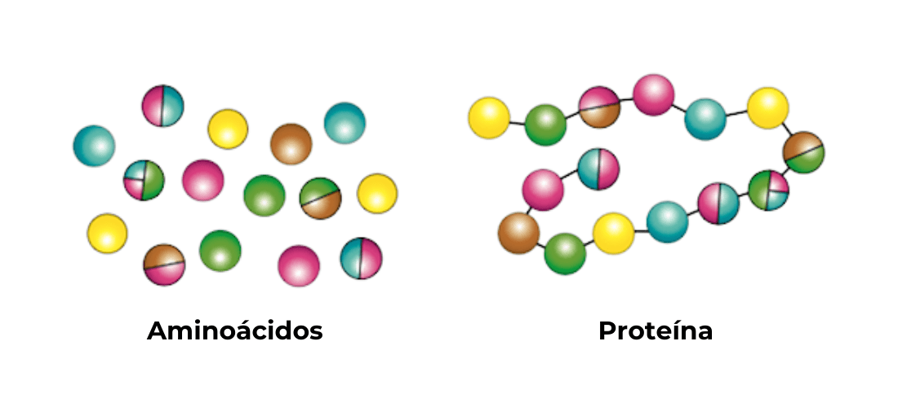
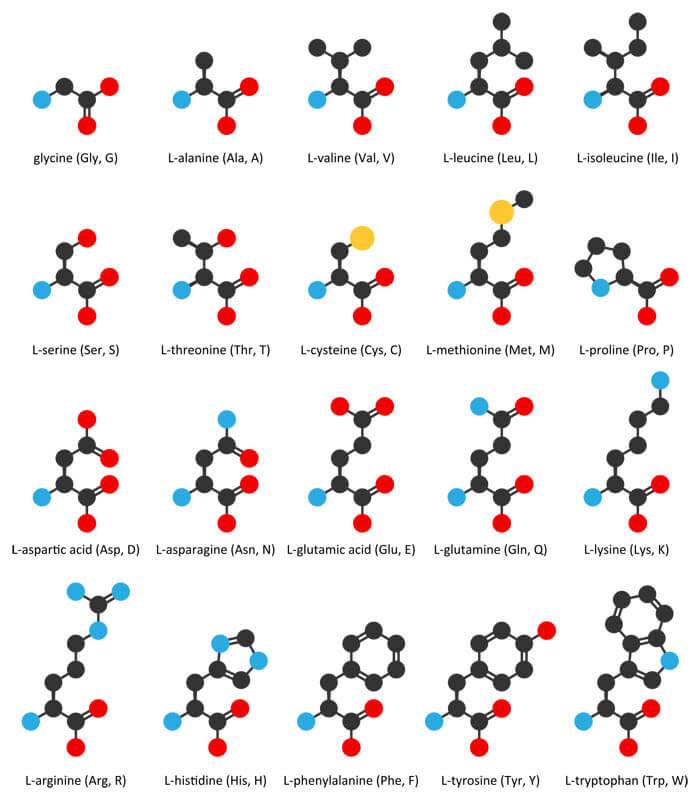

Un aminoácido (a veces abreviado como AA), es una molécula orgánica con un grupo amino (-NH2) en uno de los extremos de la molécula y un grupo carboxilo (-COOH) en el otro extremo.1 Son la base de las proteínas, sin embargo tanto estos como sus derivados participan en funciones celulares tan diversas como la transmisión nerviosa y la biosíntesis de porfirinas, purinas, pirimidinas y urea.2 Los aminoácidos juegan un papel clave en la gran mayoría de los procesos biológicos.
  